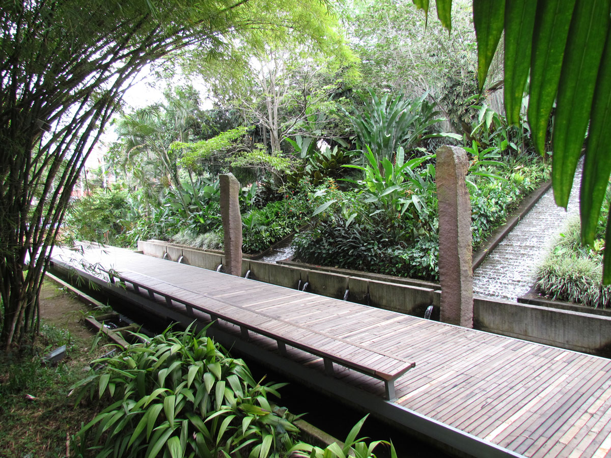

Lugar Tipico

Parque del Agua
El Parque del Agua es uno de los espacios más tranquilos y representativos de Bucaramanga. Está diseñado como un lugar para el descanso y la conexión con la naturaleza, con senderos, jardines bien cuidados y fuentes de agua que crean un ambiente relajante. Es ideal para caminar, leer o pasar tiempo en familia, rodeado de vegetación y un clima agradable. Este parque refleja por qué Bucaramanga es conocida como “la ciudad de los parques”.